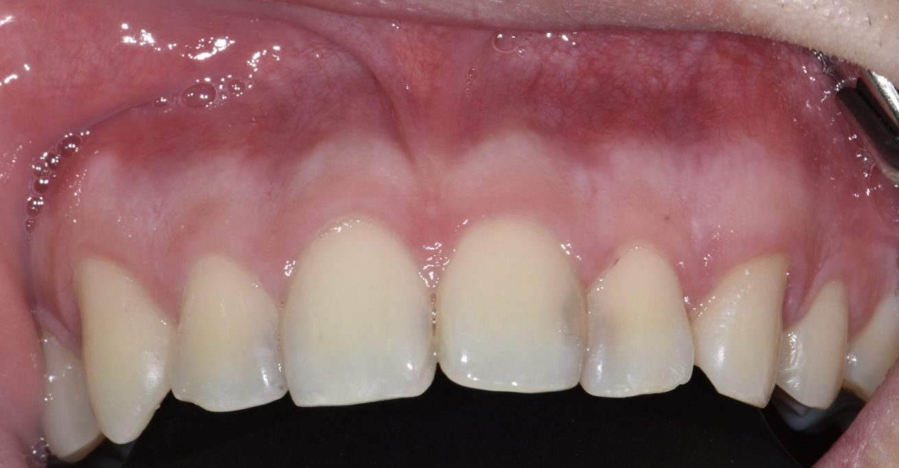
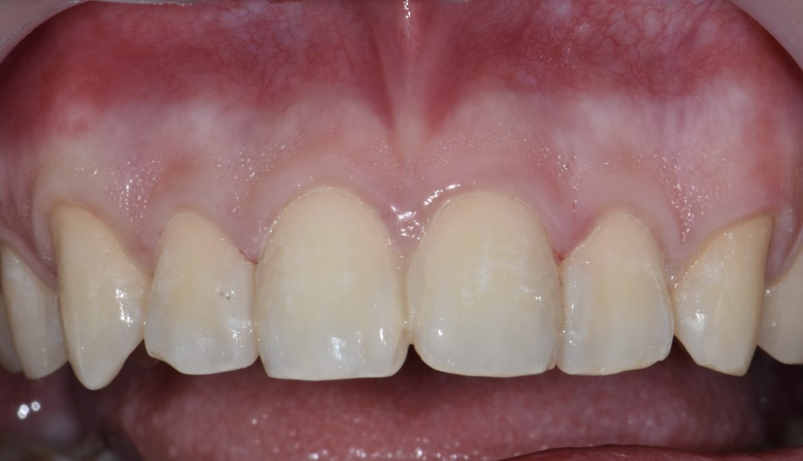

충치 치료
우식의 깊이와 범위에 따라 수복에서 근관치료까지 단계적으로 진행합니다.




Courtesy of Dr. Lee Won Woo
- 최소 삭제 원칙에 따른 직접 레진 수복
- 치수까지 진행된 우식은 근관치료 후 수복
- 파절·외상 치아의 당일 응급 처치
- 파노라마 및 구내 방사선 촬영으로 인접면 우식 진단
- 통상 1~3회 내원, 근관치료는 3~4회
임플란트, 교정을 제외한 모든 술식은 의무대 내에서 진행 가능합니다. 의료진의 판단, 혹은 환자의 요청에 따라 국군병원으로 연결해 드리기도 합니다.
전화로 예약 문의우식의 깊이와 범위에 따라 수복에서 근관치료까지 단계적으로 진행합니다.


Courtesy of Dr. Lee Won Woo
구강악안면외과 전문의가 매복 사랑니를 포함한 발치를 직접 시행합니다.
치과보철과 전문의가 손상된 치아의 형태와 기능을 회복합니다.
치석 제거와 치주 치료로 잇몸의 염증을 관리합니다.
아래 치료는 국군병원 치과에서 시행합니다. 진단과 의뢰서, 외진 일정은 이곳에서 잡아 드립니다.
외진 당일에는 소속 부대의 이동 계획이 필요합니다. 외진 일정을 받으면 바로 부대에 알리세요.
치과 군의관 두 명이 초진과 재진을 매일 번갈아 맡아 진료합니다.
3사단 의무대대 건물 2층 치과 진료실입니다. 유닛 체어 두 대와 파노라마 X선 촬영기, 멸균기를 갖추고 있습니다. 치과 군의관 두 명과 치과 의무병이 진료합니다.
모든 기구는 한 사람 진료가 끝날 때마다 멸균합니다. 진료실 안에서는 휴대전화를 꺼 주세요.
3사단 의무대대 2층 치과 진료실. 전화 033-450-7119. 평일 09:00–16:00, 점심 12:00–13:00. 소속 의무실의 진료 의뢰서와 군 신분증을 가지고 오세요.
전화로 예약 문의